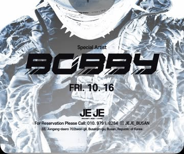
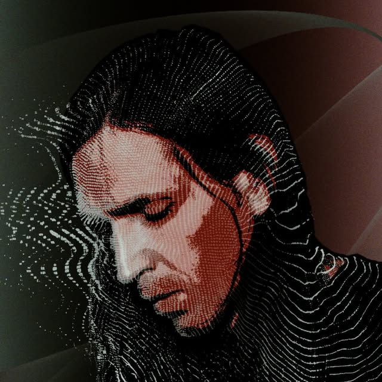
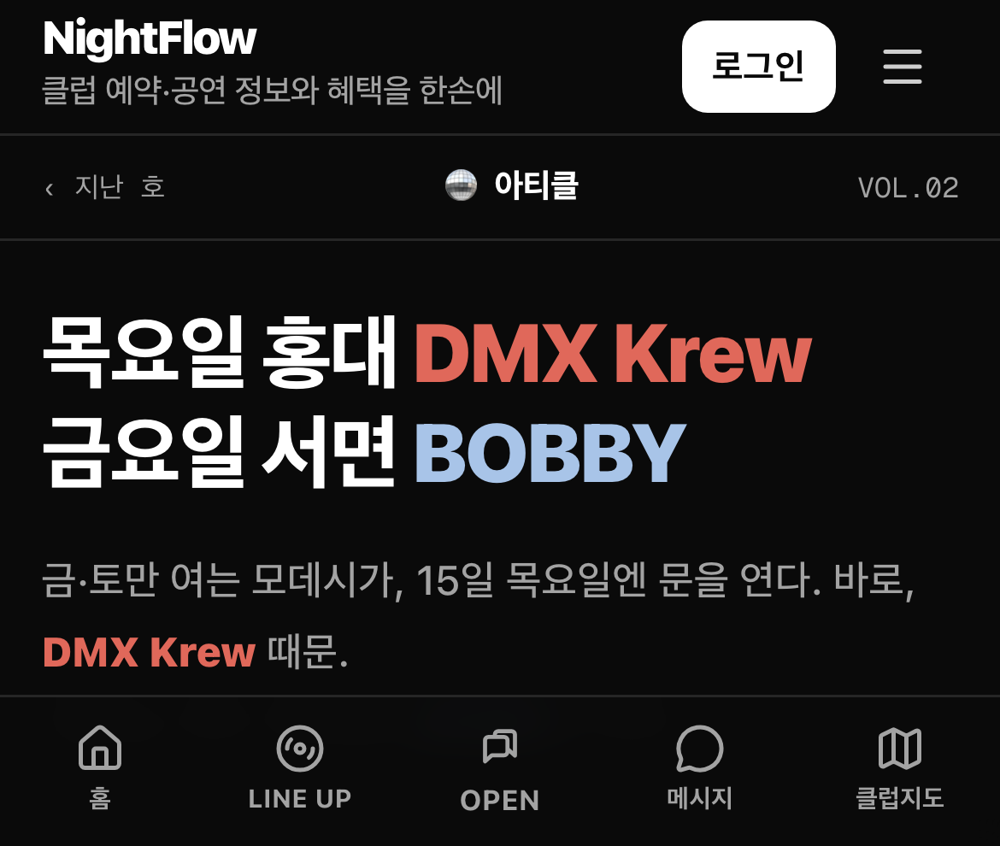

아티클 · 10.16 금요일
부산 서면 BOBBY
연차 쓰고 ㄱ?

목 · 홍대 모데시 | 금 · 서면 제제
NIGHTFLOW
1/8
금요일 10.16
BOBBY
래퍼 · 쇼미더머니3 우승
부산 서면
제제
무대에 선다
새벽 1시
한 타임
NIGHTFLOW
2/8
금요일 10.16
새벽 1시
한 타임
오픈
21:30
· 입장
선착순
공연 중 나가면
재입장 제한
1시에 맞춰 가면 늦는다
그 전에 들어가 자리를 잡아야 한다
NIGHTFLOW
3/8

목요일 10.15
DMX Krew
1994년부터 일렉트로만 · 영국
30년 동안 한 장르에서 안 내려온 사람
금·토에만 여는 홍대
모데시
가
이 사람 때문에
목요일에 연다
NIGHTFLOW
4/8
어떤 음악인가
일렉트로
125~135 BPM
· 하우스와 속도는 비슷하다
다른 건
킥
이다
네 번 균등하게
안 떨어진다
808 스네어가 박자를
엇갈리게
놓는다
걷는 리듬이 아니라
끊어 밟는 리듬
NIGHTFLOW
5/8
목요일 10.15
예매가
1만 원 싸다
예매
15,000원
· 프리드링크 1잔
도어
25,000원
· 오픈 밤 10시
DMX Krew · Mogwaa · 2ndfloor · Jesse You
@modeci_seoul 프로필 링크에서 예매
NIGHTFLOW
6/8
둘 중 어디로 갈지,
아티클에 정리해 뒀어요

일렉트로 리듬은
직접 들어볼 수
있어요
NIGHTFLOW
7/8
아티클
가장 핫한 국내 소식
매주 정리해서
보내드릴게요
놓치지 않고 싶다면?
팔로잉 + 이메일 구독
구독은 프로필 링크에서 가능해요
@nightflow.kr
8/8